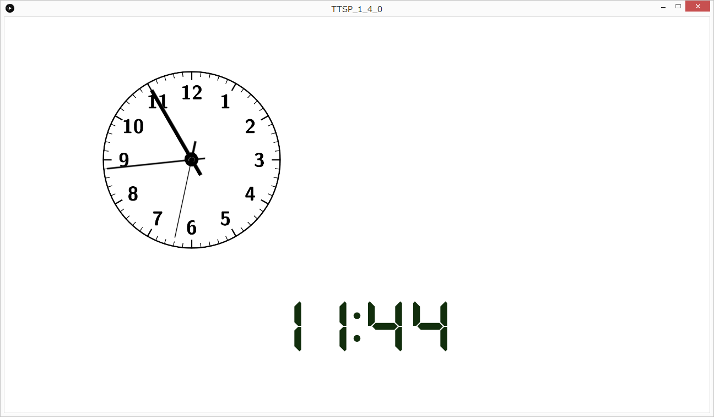

クロックモード
クロックモードは時計を表示することができます。
主な機能
- アナログ・デジタル時計の表示
- 時計の複数表示
- 時計の移動
通常のプログラムリストに加えクロックリストを使用します。
クロックリストとはクロックモード独自の機能を利用するために使うリストです。
プログラムリストへの記述
ノーマルモードと同じ属性に加えクロックモードの機能を利用するためにクロックリストのディレクトリを指定します。
記述例<config mode="clock" time="60" name="test.jpg" ratio="16:9" reference="/Expansion/clock.xml" background="128"/>/Expansion/内)クロックリストの記述
<?xml version="1.0" encoding="UTF-8"?>
<clock>
<object type="analog_img" position="100,200" size="20" board="clock1_dial.png" zone="Asia/Tokyo">
<sec name="clock1_s.png" offset="0,0"/>
<min name="clock1_m.png" offset="0,0" smooth="true"/>
<hour name="clock1_h.png" offset="0,0" smooth="true"/>
</object>
<object type="analog_pro" position="-400,70" size="100" zone="UTC+09:00">
<board dialColor="255" indexColor="0" indexwidth="3"/>
<sec color="0" width="3"/>
<min color="0" width="3" smooth="true"/>
<hour color="0" width="3" smooth="true"/>
<move startTime="5" duration="2" beginPos="-300,-200" endPos="1280,-200" behavior="accel"/>
<move startTime="7" duration="0" beginPos="0,-200" endPos="-1280,-200" behavior="warp"/>
<move startTime="7" duration="2" beginPos="-1280,-200" endPos="0,-200" behavior="decel_3"/>
</object>
<object type="degital" position="0,200" size="300" color="18,46,13" font="DSEG7Classic-Bold.ttf" zone="America/New_York" pattern="HH:mm:ss"/>
</clock>共通設定
- type
- position
- size
- zone
時計の種類を設定します
時計の位置を設定します
X座標,Y座標(画面中央が0,0)
時計の大きさを記述します
アナログ時計の場合、画面の高さの半分を100としたときの割合(%)で表します
時計のタイムゾーンを設定します
記述形式はUTC,GMT,UTを接頭辞から始まる記述形式(例:UTC+09:00)、
もしくはTZDBの地域IDを使用することができます。(例:ロンドンの場合Europe/London)
詳細はZoneId
時計の種類と必要な属性について
-
アナログ時計(画像)
- board
- sec
- name
- offset
- smooth
- min
- name
- offset
- smooth
- hour
- name
- offset
- smooth
-
アナログ時計(プログラム)
- board
- dialColor
- indexColor
- indexwidth
- sec
- color
- width
- smooth
- min
- color
- width
- smooth
- hour
- color
- width
- smooth
-
デジタル時計
- color
- font
- pattern
盤面に使用するファイル名を指定します
アナログ時計を表示する場合は針別の設定があるため子要素があります。
秒針に使用するファイル名を指定します
回転軸の座標を設定します。
スイープ運針させるかさせないか設定します。(true/false)
長針に使用するファイル名を指定します
回転軸の座標を設定します。
スイープ運針させるかさせないか設定します。(true/false)
短針に使用するファイル名を指定します
回転軸の座標を設定します。
スイープ運針させるかさせないか設定します。(true/false)
アナログ時計を表示する場合は針別の設定があるため子要素があります。
時計の盤面部分の設定
盤面の色を指定します。(RGBもしくはWB)
インデックスの色を指定します。(RGBもしくはWB)
インデックスの太さを指定します。
秒針色を指定します。(RGBもしくはWB)
秒針の太さを指定します。
スイープ運針させるかさせないか設定します。(true/false)
長針色を指定します。(RGBもしくはWB)
長針の太さを指定します。
スイープ運針させるかさせないか設定します。(true/false)
短針色を指定します。(RGBもしくはWB)
短針の太さを指定します。
スイープ運針させるかさせないか設定します。(true/false)
デジタル時計ではフォントを設定する必要があります
色を指定します。(RGBもしくはWB)
時計のフォントを指定します。
デフォルトのフォントディレクトリはdata/fontに設定されています。
時計の表示形式を指定します。書式は一般に使用される形式をそのまま使用できます。
(例:2018.10.28(日) 17(午後 05):12:07.168yyyy.MM.dd(E) HH(a hh):mm:ss.SSS)